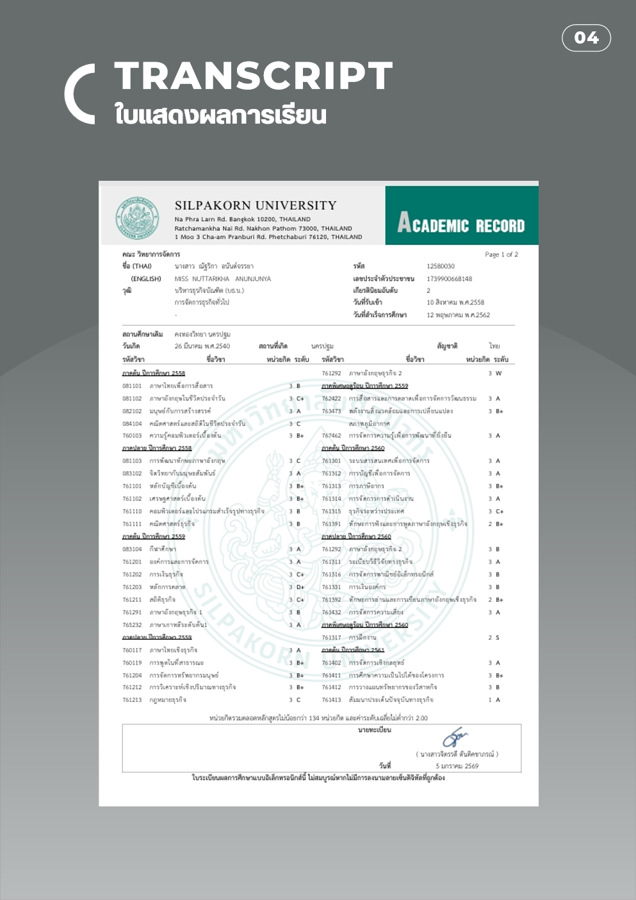
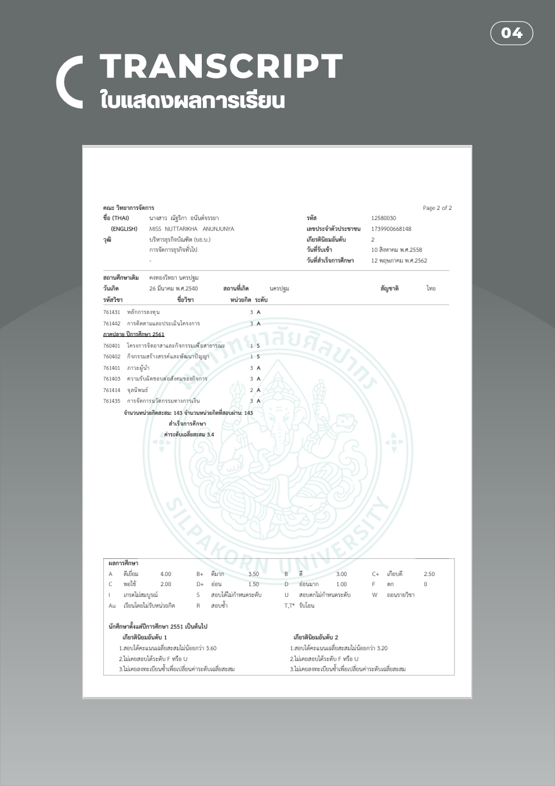
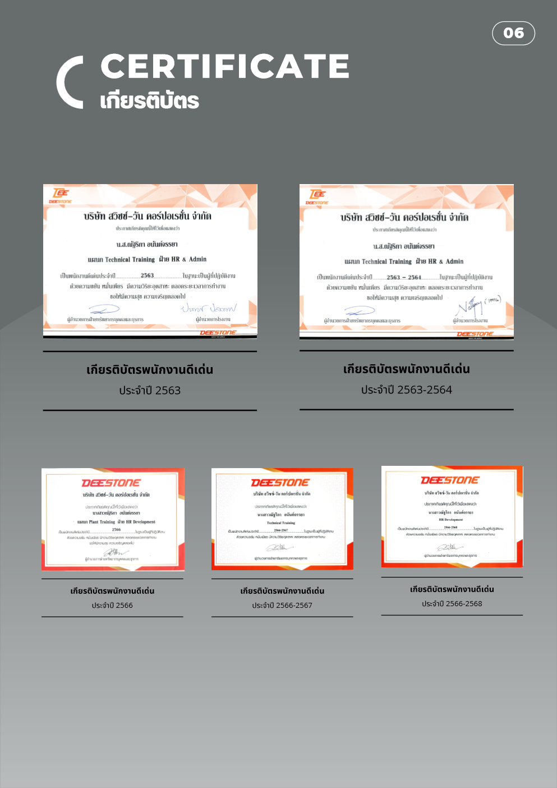
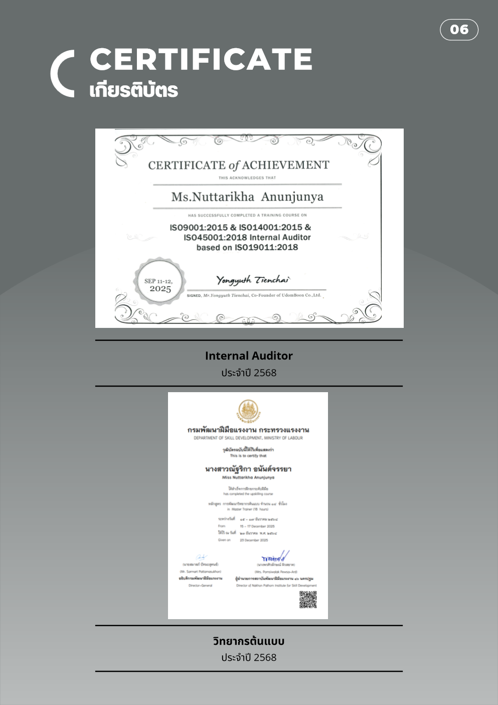
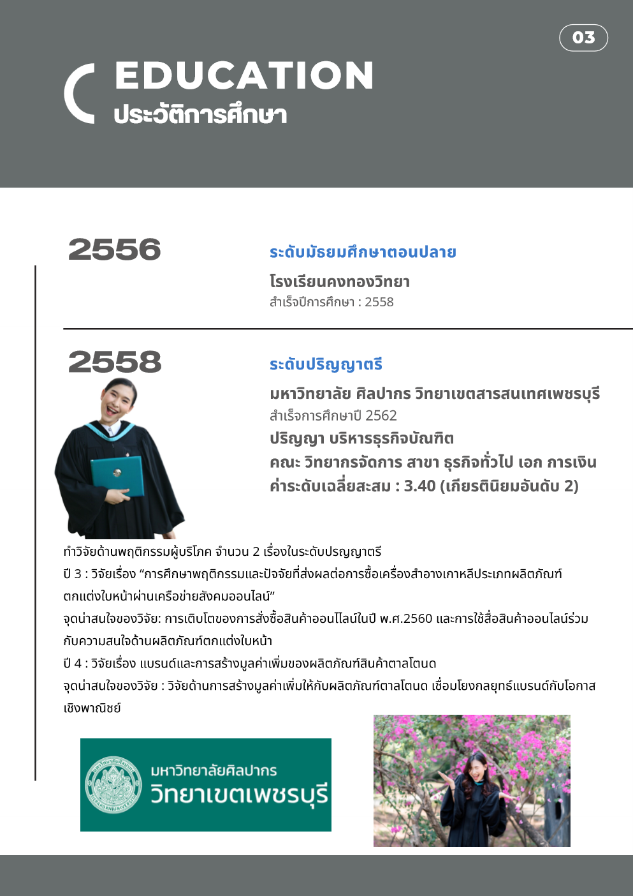
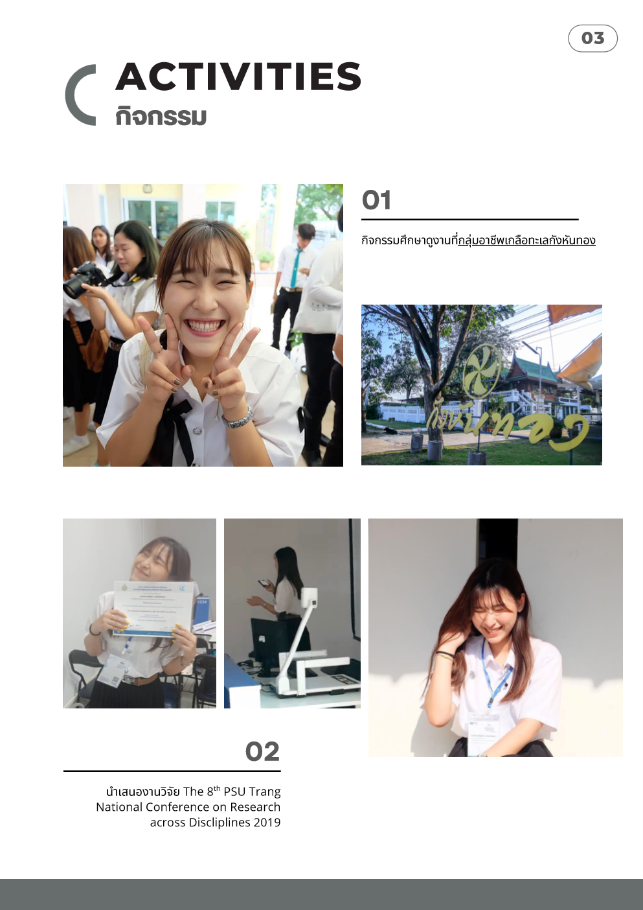
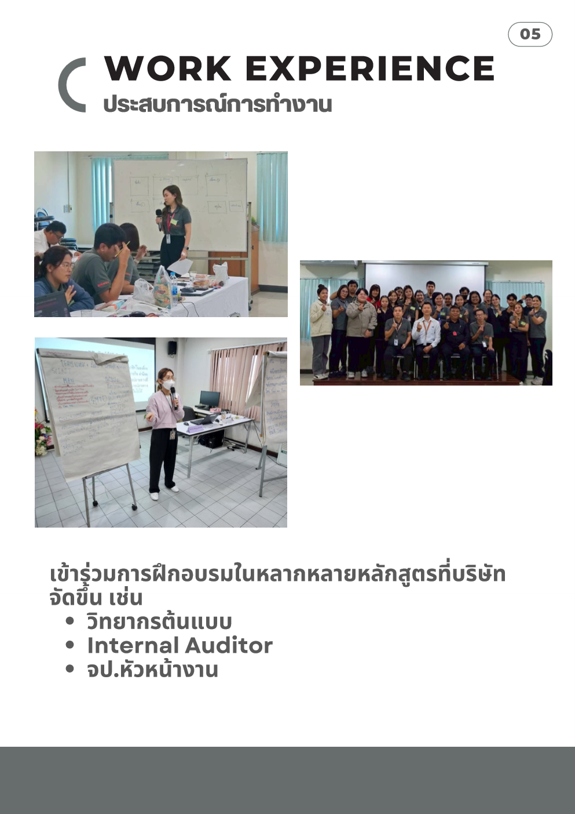
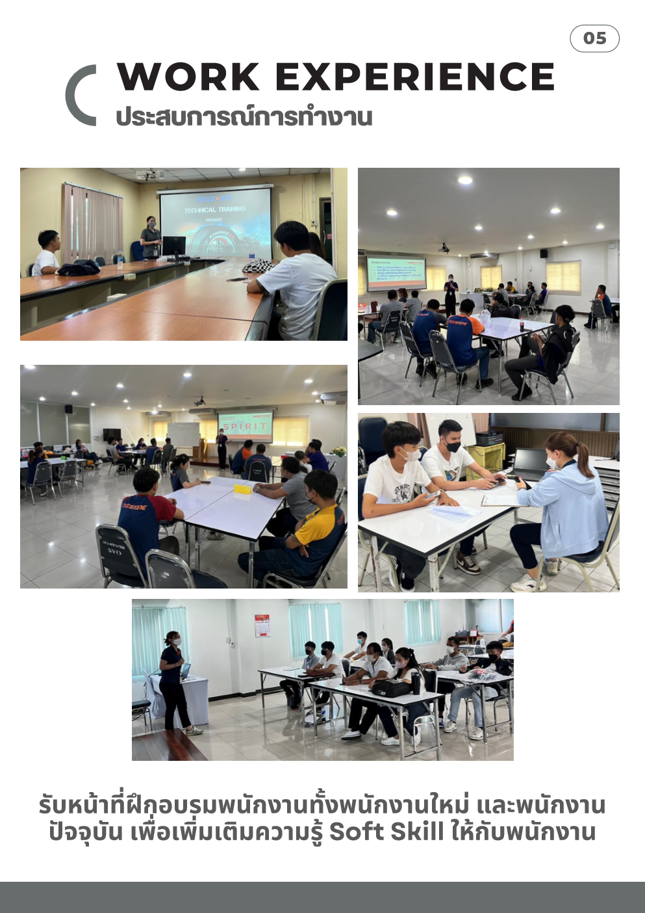
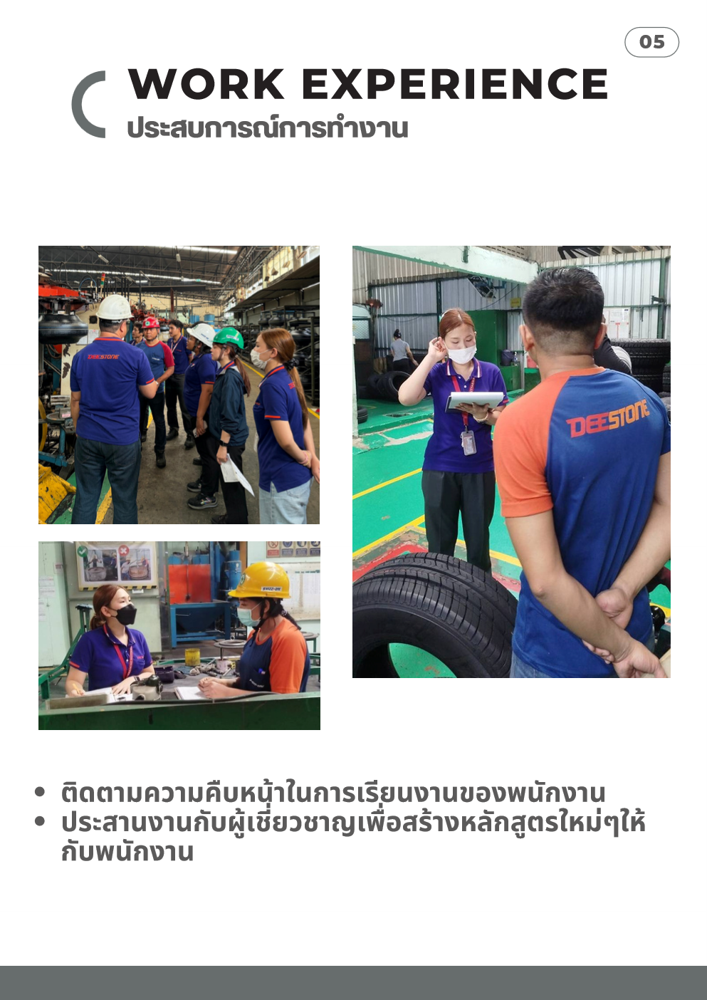
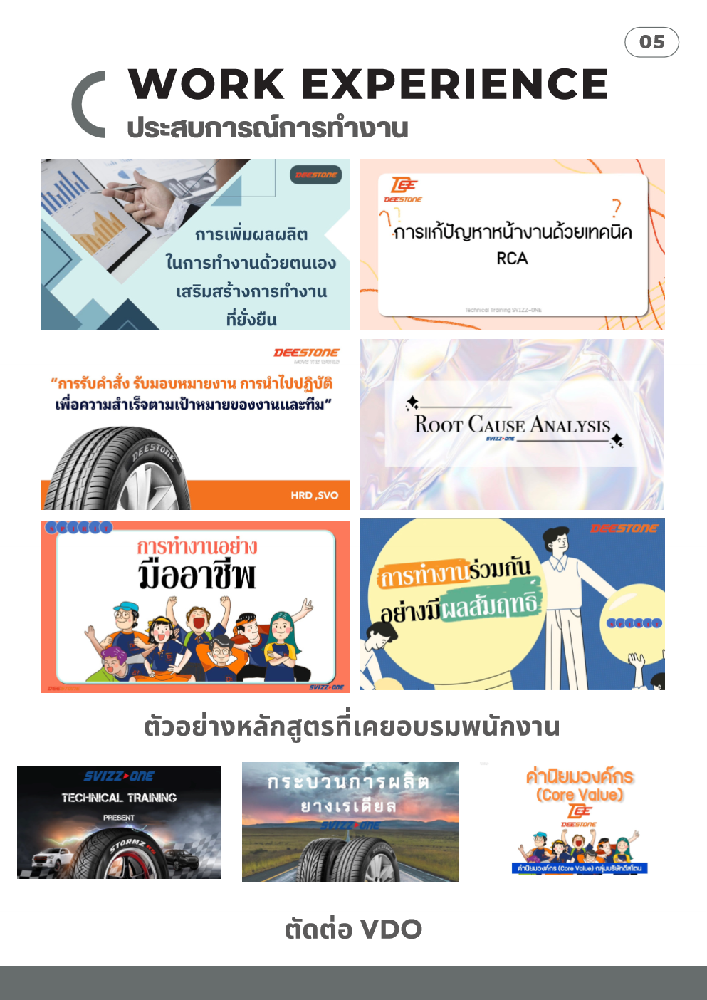

รายงานผลงานบุคคล
ณัฐริกา อนันต์จรรยา
"ความพยายามอยู่ที่ไหน ความสำเร็จอยู่ที่นั่น" — มุ่งเน้นการพัฒนาทรัพยากรมนุษย์ด้วย Growth Mindset วงจรการฝึกอบรมสมบูรณ์แบบ (End-to-End Training) และนวัตกรรมดิจิทัลเพื่อขับเคลื่อนองค์กรสู่อนาคต
ประวัติการศึกษา (EDUCATION)
เส้นทางการศึกษาและความสำเร็จทางวิชาการ ปริญญาโท มจพ. และปริญญาตรีเกียรตินิยมอันดับ 2
ระดับปริญญาโท (Master's Degree)
คณะพัฒนาธุรกิจและอุตสาหกรรม มหาวิทยาลัยเทคโนโลยีพระจอมเกล้าพระนครเหนือ (มจพ. / KMUTNB)
แผนการเรียน: บริหารธุรกิจมหาบัณฑิต สาขาการพัฒนาธุรกิจอุตสาหกรรมและกลยุทธ์ (S-MBR รุ่นที่ 17)
รหัสนักศึกษา: s6916011856072
ความเชี่ยวชาญ: การจัดการเทคโนโลยีสารสนเทศเพื่อธุรกิจ (MIS), การพัฒนาระบบสถาปัตยกรรม HRMS / LMS, พฤติกรรมองค์การและจิตวิทยาอุตสาหกรรม
ระดับปริญญาตรี (Bachelor's Degree)
คณะวิทยาการจัดการ มหาวิทยาลัยศิลปากร วิทยาเขตสารสนเทศเพชรบุรี
ปริญญา: บริหารธุรกิจบัณฑิต (บธ.บ.) สาขาธุรกิจทั่วไป เอกการเงิน
เกียรตินิยม: เกียรตินิยมอันดับ 2 ค่าระดับเฉลี่ยสะสม 3.40 (จำนวน 143 หน่วยกิต)
งานวิจัยระดับปริญญาตรี 2 เรื่อง:
• วิจัยปี 3: การศึกษาพฤติกรรมและปัจจัยที่ส่งผลต่อการซื้อเครื่องสำอางเกาหลีประเภทผลิตภัณฑ์ตกแต่งใบหน้าผ่านเครือข่ายสังคมออนไลน์
• วิจัยปี 4: แบรนด์และการสร้างมูลค่าเพิ่มของผลิตภัณฑ์สินค้าตาลโตนด (ได้รับคัดเลือกนำเสนอในที่ประชุมวิชาการระดับชาติ PSU Trang)
ระดับมัธยมศึกษาตอนปลาย
โรงเรียนคงทองวิทยา จังหวัดนครปฐม
สำเร็จการศึกษาปีการศึกษา 2558 ด้วยพื้นฐานสายการเรียนที่เน้นกระบวนการคิดวิเคราะห์และกิจกรรมผู้นำนักเรียน
เอกสารแสดงผลการศึกษาอย่างเป็นทางการ (Official Transcripts)
SILPAKORN UNIVERSITY

สถานที่ติดต่อ (CONTACT & LOCATION)
ช่องทางการสื่อสาร ข้อมูลที่อยู่ และสถานที่ปฏิบัติงานปัจจุบัน
(Svizz-One Corporation Ltd. / เครือกลุ่มบริษัท ดีสโตน Deestone)
แผนก Technical Training / HR Development / HR & Admin
ผลงานโดดเด่น (OUTSTANDING ACHIEVEMENTS)
รางวัลพนักงานดีเด่น 5 สมัย วุฒิบัตรวิทยากรต้นแบบ และผู้ตรวจประเมินระบบมาตรฐานสากล ISO

ดูใบประกาศเกียรติบัตรพนักงานดีเด่น ประจำปี 2563
บริษัท สวิซซ์-วัน คอร์ปอเรชั่น จำกัด (ฝ่าย HR & Admin)
มอบเพื่อยกย่องในฐานะผู้ปฏิบัติงานด้วยความขยัน หมั่นเพียร มีความวิริยะอุตสาหะ ตลอดระยะเวลาการทำงาน
เกียรติบัตรพนักงานดีเด่น ประจำปี 2563-2564
บริษัท สวิซซ์-วัน คอร์ปอเรชั่น จำกัด (ฝ่าย HR & Admin)
ได้รับคัดเลือกต่อเนื่องเป็นปีที่ 2 จากผลงานการพัฒนาหลักสูตรและการบริหารงานฝึกอบรมที่สร้างผลสัมฤทธิ์สูง
เกียรติบัตรพนักงานดีเด่น ประจำปี 2566
บริษัท สวิซซ์-วัน คอร์ปอเรชั่น จำกัด (กลุ่มบริษัท ดีสโตน Deestone)
แผนก Plant Training ฝ่าย HR Development การขับเคลื่อนระบบฝึกอบรมหน้างานเชิงปฏิบัติการ
เกียรติบัตรพนักงานดีเด่น ประจำปี 2566-2567
บริษัท สวิซซ์-วัน คอร์ปอเรชั่น จำกัด (ฝ่าย Technical Training)
ผลงานการพัฒนาสื่อวิดีโอเทคนิคการสอน และการยกระดับสมรรถนะบุคลากรฝ่ายผลิต
เกียรติบัตรพนักงานดีเด่น ประจำปี 2566-2568
บริษัท สวิซซ์-วัน คอร์ปอเรชั่น จำกัด
ตอกย้ำมาตรฐานความเป็นเลิศในฐานะนักพัฒนาบุคลากรที่ทุ่มเทและสร้างคุณค่าแก่องค์กรอย่างต่อเนื่อง

ดูใบวุฒิบัตรวุฒิบัตร "วิทยากรต้นแบบ" (Master Trainer - 18 ชม.)
กรมพัฒนาฝีมือแรงงาน กระทรวงแรงงาน (สถาบันพัฒนาฝีมือแรงงาน 16 นครปฐม)
ผ่านการฝึกอบรมหลักสูตรการพัฒนาวิทยากรต้นแบบ เพื่อทำหน้าที่ถ่ายทอดความรู้และยกระดับฝีมือแรงงานตามมาตรฐานระดับประเทศ
ISO 9001:2015, ISO 14001:2015 & ISO 45001:2018 Internal Auditor
Certified based on ISO 19011:2018 (Udumboon Co., Ltd.)
ผ่านการอบรมและผ่านเกณฑ์เป็นผู้ตรวจประเมินระบบการจัดการคุณภาพ สิ่งแวดล้อม และอาชีวอนามัยและความปลอดภัยภายในองค์กร

ดูหลักฐานปริญญาบริหารธุรกิจบัณฑิต เกียรตินิยมอันดับ 2
มหาวิทยาลัยศิลปากร วิทยาเขตสารสนเทศเพชรบุรี
ผลการเรียนเฉลี่ยสะสม 3.40 สาขาธุรกิจทั่วไป เอกการเงิน คณะวิทยาการจัดการ
ผลงานวิชาการ (ACADEMIC WORKS & PROJECTS)
การศึกษาค้นคว้า การออกแบบสถาปัตยกรรมเทคโนโลยีสารสนเทศ และการศึกษาดูงานอุตสาหกรรมชั้นนำ
สถาปัตยกรรมระบบ HRMS / LMS โมดูล "Auto-OJT Mapping"
การออกแบบการทรานส์ฟอร์มระบบฝึกอบรม On-the-Job Training ด้วยเทคโนโลยีสารสนเทศเพื่อธุรกิจ
ออกแบบโมเดลปรับเปลี่ยนกระบวนการฝึกอบรมบุคลากรจากการทำงานบนไฟล์กระดาษและสเปรดชีตแบบเดิม (Manual & Paper-based) สู่ระบบดิจิทัลแบบรวมศูนย์ (Centralized Database & Cloud Platform):
- Auto-OJT Mapping: ระบบจับคู่หลักสูตรฝึกอบรมกับ Job Description และตำแหน่งงานของพนักงานอัตโนมัติ 100% ถูกต้องแม่นยำ
- E-Signature & Paperless: เซ็นอนุมัติผ่านแท็บเล็ตและเว็บเบราว์เซอร์ ลดการใช้กระดาษลงกว่า 90%
- Efficiency Boost: ลดระยะเวลาการอนุมัติเอกสารจากเดิม 3-5 วัน เหลือเพียงไม่กี่นาที
- Real-time Compliance: ดึงรายงานประวัติการฝึกอบรมรองรับการตรวจ Audit และส่งสถาบันพัฒนาฝีมือแรงงานได้ทันที
รายงานการศึกษาดูงานกระบวนการผลิตและการจัดการธุรกิจจริง
การเชื่อมโยงทฤษฎีการจัดการสู่อุตสาหกรรมระดับประเทศ
1. การศึกษาดูงาน บริษัท บิทไว้ส์ (ประเทศไทย) จำกัด (Bitwise Thailand)
ศึกษาเทคโนโลยีการผลิตเครื่องปรับอากาศมาตรฐานสากล การบริหารจัดการโซ่อุปทาน (Supply Chain) และระบบอัตโนมัติในสายการผลิต
2. การศึกษาดูงานกลุ่มอาชีพเกลือทะเลกังหันทอง (สมุทรสงคราม)
ศึกษากระบวนการเพิ่มมูลค่าผลิตภัณฑ์ชุมชนภูมิปัญญาไทย นวัตกรรมสปาเกลือ และการสร้างความเข้มแข็งของวิสาหกิจชุมชน
การวิเคราะห์ Context Diagram & การประเมินการควบคุมภายในด้าน IT
รายวิชาการจัดการเทคโนโลยีสารสนเทศเพื่อธุรกิจ (160115201)
วิเคราะห์โครงสร้างระบบสารสนเทศระดับองค์กร (TPS, MIS, DSS, ESS) เชื่อมโยงระดับการบริหารงานตั้งแต่ผู้ปฏิบัติการจนถึงผู้บริหารระดับสูง (C-Level):
- การออกแบบ Context Diagram แสดง Flow ข้อมูลการฝึกอบรมระหว่างองค์กร, ผู้เรียน, วิทยากร, ผู้บริหาร และหน่วยงานภาครัฐ
- การประเมินความเสี่ยงและมาตรการควบคุมภายใน (IT Risk and Internal Control Blueprint) สำหรับระบบ HRMS
- การวิเคราะห์พฤติกรรมมนุษย์และจิตวิทยาองค์การ (The OB Blueprint) เพื่อขับเคลื่อนการเปลี่ยนแปลงทางเทคโนโลยี
ผลงานบทความวิจัย (RESEARCH ARTICLES & PUBLICATIONS)
การนำเสนอบทความวิจัยในการประชุมวิชาการระดับชาติ และงานวิจัยเชิงประจักษ์ด้านพฤติกรรมผู้บริโภค
แบรนด์และการสร้างมูลค่าเพิ่มของผลิตภัณฑ์สินค้าตาลโตนด
Brand and Value Creation of Asian Palmyra Palm Products

การศึกษาพฤติกรรมและปัจจัยที่ส่งผลต่อการซื้อเครื่องสำอางเกาหลีประเภทผลิตภัณฑ์ตกแต่งใบหน้าผ่านเครือข่ายสังคมออนไลน์
A Study of Consumer Behaviors and Factors Affecting Purchase Decisions of Korean Cosmetics via Social Networks
งานวิทยากร (SPEAKER & TRAINER EXPERIENCE)
การถ่ายทอดความรู้ Soft Skills, การโค้ชชิ่งวิทยากรภายใน, และการผลิตสื่อนวัตกรรมวิดีโอเพื่อการเรียนรู้
วงจรการฝึกอบรมอย่างสมบูรณ์แบบ (End-to-End Training Process)
ปรัชญาการทำงานที่มุ่งเน้นความรอบคอบ วินัย และ Growth Mindset ครอบคลุม 4 เสาหลักสำคัญ
Analyze & Plan
วิเคราะห์ความต้องการฝึกอบรม (TNA), จัดทำแผนพัฒนาสมรรถนะรายบุคคล (IDP) และวางโครงสร้างหลักสูตรรายปีให้สอดคล้องกับกลยุทธ์องค์กร
Design & Deliver
ออกแบบเนื้อหา ปรับเปลี่ยนพฤติกรรมผู้เรียน สวมบทบาทวิทยากรบรรยายหลักสูตร Soft Skills และโค้ชพัฒนาทักษะให้กับวิทยากรภายใน
Digital Learning
พัฒนาสื่อนวัตกรรมยุคใหม่ เช่น E-Learning, Microlearning และตัดต่อ Learning Video เพื่อยกระดับความสะดวกและทันสมัย
Operations & Compliance
ประสานงานสถาบันพัฒนาฝีมือแรงงาน กระทรวงแรงงาน เพื่อให้หลักสูตรเป็นไปตามมาตรฐานที่ พ.ร.บ. ส่งเสริมการพัฒนาฝีมือแรงงานกำหนด
ตัวอย่างหลักสูตรที่บรรยายและฝึกอบรมพนักงาน (Curriculum & Courses)
การเพิ่มผลผลิตในการทำงานด้วยตนเอง เสริมสร้างการทำงานที่ยั่งยืน
การบริหารเวลา การขจัดความสูญเปล่าในการทำงาน และการสร้างวินัยการทำงานส่วนบุคคล
การแก้ปัญหาหน้างานด้วยเทคนิค RCA (Root Cause Analysis)
เทคนิคค้นหาสาเหตุที่แท้จริงของปัญหาหน้างาน เช่น Why-Why Analysis และ Fishbone Diagram
การรับคำสั่ง รับมอบหมายงาน และการนำไปปฏิบัติเพื่อเป้าหมายของทีม
การสื่อสารอย่างมีประสิทธิผล การทวนคำสั่ง ลดความคลาดเคลื่อนในการส่งมอบงาน
การทำงานอย่างมืออาชีพ (Professional Working Style)
การปรับทัศนคติ เชาวน์อารมณ์ และมารยาทการประสานงานร่วมกับผู้อื่นในองค์กร
การทำงานร่วมกันอย่างมีผลสัมฤทธิ์ (High-Performing Team)
การสร้างความไว้วางใจ การร่วมมือข้ามสายงาน และการแก้ไขความขัดแย้งเชิงสร้างสรรค์
การสร้างสรรค์สื่อ VDO: สื่อการผลิตยางเรเดียล & ค่านิยมองค์กร
ตัดต่อและกำกับสื่อ Technical Training Present, Core Value ดีสโตน, และคู่มือสื่อสอนพนักงานใหม่
ภาพบรรยากาศการบรรยายและการจัดฝึกอบรมจริง (Training in Action)




DASHBOARD รายงานผลงาน (PERFORMANCE DASHBOARD)
การสรุปสถิติเชิงปริมาณและคุณภาพ ตัวชี้วัดความสำเร็จ และความก้าวหน้าในการพัฒนาทรัพยากรมนุษย์
สถิติจำนวนพนักงานที่ได้รับการอบรมรายปี (2020 - 2026)
ANNUAL ATTENDANCEสัดส่วนประเภทหลักสูตรฝึกอบรม (Course Categories)
CURRICULUM RATIOสมรรถนะและความเชี่ยวชาญ 6 ด้าน (Competency Matrix)
HRD SKILLSผลสัมฤทธิ์การเรียนรู้ (Pre-Test vs Post-Test Evaluation)
KIRKPATRICK LEVEL 2ตารางสรุปโครงการสำคัญและการรับรองสมรรถนะ (Key Project Milestones)
VERIFIED RECORDS| ปี พ.ศ. | โครงการ / ผลงานสำคัญ | บทบาทหน้าที่ | หน่วยงาน / สถาบัน | สถานะ / ผลลัพธ์ |
|---|---|---|---|---|
| 2568 | การพัฒนาวิทยากรต้นแบบ (Master Trainer 18 ชม.) | ผู้ผ่านการอบรมวิทยากร | สถาบันพัฒนาฝีมือแรงงาน 16 นครปฐม | ผ่านเกณฑ์วุฒิบัตร |
| 2568 | ISO 9001/14001/45001 Internal Auditor | ผู้ตรวจประเมินภายใน | Udumboon / สวิซซ์-วัน คอร์ปอเรชั่น | Certified |
| 2567-ปัจจุบัน | ออกแบบสถาปัตยกรรมสารสนเทศ HRMS / Auto-OJT Mapping | ผู้วิจัยและผู้ออกแบบระบบ | มจพ. (KMUTNB S-MBR) | กำลังดำเนินการ |
| 2563, 64, 66, 67, 68 | รางวัลเกียรติบัตรพนักงานดีเด่น (5 สมัย) | เจ้าหน้าที่ฝึกอบรมอาวุโส | บ.สวิซซ์-วัน คอร์ปอเรชั่น จำกัด | เกียรติบัตร 5 ปี |
| 2562 | นำเสนอบทความวิจัยแบรนด์และสินค้าตาลโตนด | ผู้วิจัยนำเสนอผลงาน | The 8th PSU Trang National Conference | Published |
| 2562 | สำเร็จการศึกษาปริญญาตรี เกียรตินิยมอันดับ 2 (GPA 3.40) | นักศึกษา บธ.บ. เอกการเงิน | มหาวิทยาลัยศิลปากร | เกียรตินิยมอันดับ 2 |